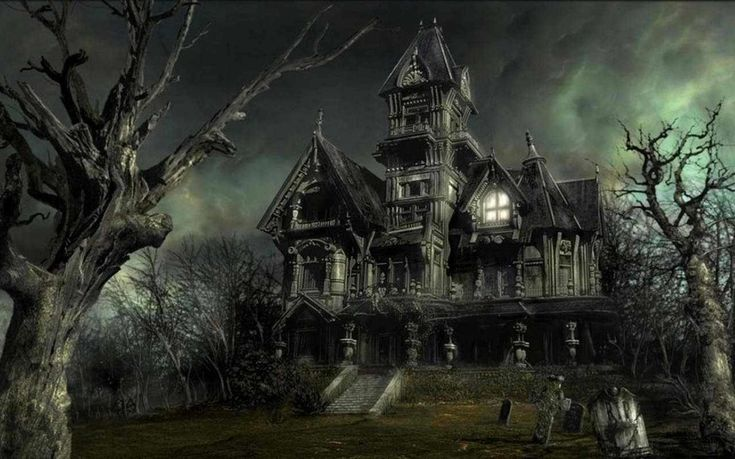

MY HOUSE
Haunted? NOPE! Honestly, this place just has... character. The attic knocks? Mice, raccoons, raccoon adjacent activity nothing supernatural, just wildlife doing wildlife things. The midnight floorboard groan? That's an old house settling, not an angry poltergeist announcing itself. The portrait that gives you the eye on the landing? It's an old painting with an unfortunate expression, that's all. I have lived here long enough to know the difference between history and hysteria.
I make a point of explaining every weird sound or chill in the most boring way possible. Cold draft down the hallway? Broken weatherstripping. Lights flickering? Loose wiring or a cranky bulb. The faint singing I once heard under my bedroom door? Either the neighbor practicing an off key lullaby or my imagination after too many late night ghost stories. When the basement smelled bad, it wasn't brimstone—it was a damp box of books that had been forgotten. Practical solutions, every time.
If something happens that doesn't have an obvious fix, I don't leap to ghosts I ask questions. Is there a reason the handprint is on the inside of the window? Did someone forget to close a window, leaving a streak? Is the 'voice' coming through a speaker from the TV? The house just likes mood lighting and sounds it doesn't need specters to be interesting. Keeping a toolbox and a flashlight by the door has worked better than candles and seances.
So no, it's not haunted it's just old, a little dramatic, and full of quirks. I like that. If it were haunted, it would have given me an honest rattle by now. Instead, it gives me soggy books, creaky floorboards, and the occasional inexplicable draft to blame on the weather. I'll keep looking for reasonable causes, because they're usually the right ones. And if they ever stop being the right ones—well, I'll still keep a flashlight handy, but I'm not packing up yet.